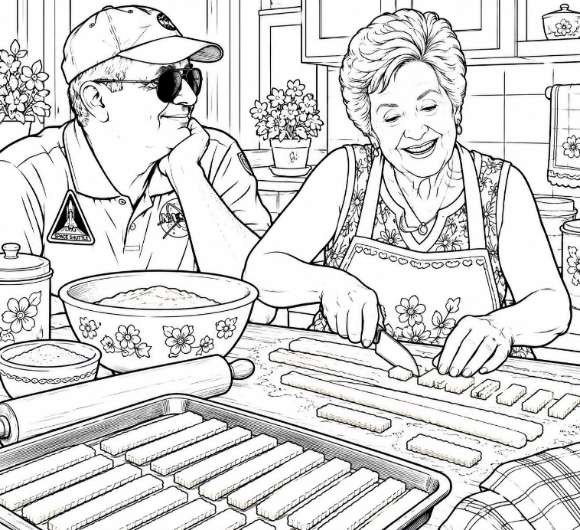

Bolachinhas da Sogra

As Bolachinhas da Sogra são as preferidas do genro Glauber, que as adora não apenas pelo sabor, mas também pelo carinho que Zelinda coloca em cada detalhe. Há amor em cada ingrediente, um cuidado que se revela
na massa macia, enriquecida pelo creme de leite, e naquela casquinha delicada, feita com leite e açúcar, que torna cada bolachinha ainda mais especial. São pequenas delícias que carregam algo que não se mede nem se pesa: o afeto de quem prepara e a alegria de quem recebe.
Ingredientes
3 xícaras (chá) de farinha de trigo 1 colher (sopa) de fermento em pó 1 pitada de sal
3 colheres (sopa) de açúcar 2 gemas
1 caixinha de creme de leite 1 colher (sopa) de manteiga
Para a finalização: Leite e açúcar para pincelar e cobrir
Modo de preparo
O Preparo da Massa: Misture os ingredientes e amasse bem até que tudo esteja incorporado e forme uma massa macia.
O Descanso: Deixe a massa descansar por cerca de 30 minutos. Modelagem: Abra a massa, corte no formato desejado e coloque as bolachinhas em uma assadeira.
A Finalização: Pincele cada bolachinha com leite e polvilhe açúcar por cima antes de levar ao forno para assar até dourarem levemente.